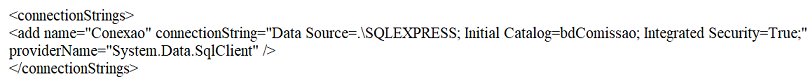

Prefixos utilizados em componentes
| frm | formulário |
| lbl | label |
| txt | textbox |
| btn | button |
| pic | picturebox |
| cmb | combobox |
| lst | listbox |
| gb | groupbox |
| tab | tabcontrol |
| dtp | datetimepicker |
| chk | checkbox |
| rb | radiobutton |
| tmr | timer |
| pbr | progressbar |
| msk | maskedtextbox |
| dgv | datagridview |
| mnu | menustrip |
| tlb | toolbar |
Eventos
| click | ocorre quando é dado um clique com o mouse em um controle |
| load | ocorre quando o formulário está sendo carregado |
| shown | ocorre quando o formulário foi carregado |
| formclosing | ocorre quando o formulário está sendo descarregado da memória |
| enter | ocorre quando um controle recebe o foco (cursor). Ex: em um textbox |
| leave | ocorre quando um controle perde o foco (cursor). Ex: em um textbox |
| dblClick | ocorre quando é dado duplo clique com o mouse em um controle |
| mousedown | ocorre quando o botão do mouse é pressionado |
| mouseup | ocorre quando o botão do mouse é solto |
| mousemove | ocorre quando o mouse é deslocado sobre um controle |
| keydown | ocorre quando uma tecla é pressionada. Em KeyCode é obtido um número, representando o código da tecla |
| keypress | ocorre quando uma tecla é pressionada. É devolvido o valor ANSI. Ex: 65 representa a tecla A (maiúscula) |
| keyup | ocorre quando uma tecla é solta |
| dragdrop | ocorre quando um controle é arrastado para outra posição |
Propriedades
Abaixo estão listadas algumas propriedades de alguns componentes
FormulárioStartPosition:Define em que local da janela será exibido o formulário: CenterScreen:Abre o centro da janela
FormBorderStyle:Define como serão os estilos de borda do formulário:FixedSingle/Fixed3D/FixedDialog: Não permite redimensionar - Sizable: É o padrão, e permite redimensionar.
MaximizeBox:Não permite maximizar o formulário, se estiver como False
BackgroundImage:Define uma imagem de fundo para o formulário (papel de parede).
BackgroundImageLayout:Define o posicionamento da imagem de fundo: Tile: Serão exibidas várias imagens, dependendo do tamanho da imagem - Center:Será exibida somente uma imagem, no centro do formulário - Stretch:A imagem ficará ocupando todo o tamanho do formulário, não importando o tamanho do mesmo.
Size: Define a largura e a altura do formulário.
WindowState:Define como o formulário será aberto:Normal:Será aberto com o tamanho especificado na propriedade Size - Maximized: Será aberto maximizado
AcceptButton: Permite definir por exemplo, qual o botão será executado, quando pressionarmos a tecla Enter.
CancelButton: Permite definir por exemplo, qual o botão será executado, quando pressionarmos a tecla Esc.
IsMdiContainer: Se estiver como True, será definido como formulário Pai MDI.
TopMost: Se estiver como True, qualquer aplicação que você carregar, ficará sempre atrás do formulário.
Label
AutoSize: Se estiver como True que é o padrão, o texto inserido, fará com que o label seja ajustado automaticamente.
Backcolor: Define a cor de fundo.
Forecolor: Define a cor da fonte.
Font: Permite alterar a fonte, estilos negrito e itálico, tamanho.
Image: Permite inserir uma imagem.
ImageAlign: Permite alinhar a imagem.
TextAlign: Permite alinhar o texto.
TextBox
Enabled: Se estiver como True, está habilitado, ou seja: é permitida a inserção de textos no mesmo. Se estiver como False, está desabilitado, ou seja: bloqueada a inserção de textos.
Visible: Se estiver como True, será exibido. Se estiver como False, ficará oculto.
TabIndex: Define quando é pressionada a tecla Tab, para qual componente o foco será deslocado.
MultiLine: Se estiver como True, terá várias linhas. ScrollBars: Permite inserir barra de rolagem, tanto na vertical, horizontal, ou ambas.
ReadOnly: Se estiver como True, o conteúdo não poderá ser alterado.
UseSystemPasswordChar: Se estiver como True, quando em execução o caracter * (asterisco), será exibido no lugar do texto que estiver sendo digitado.
PasswordChar: Permite definir um caracter para ser utilizado por exemplo na senha. O mais utilizado é o * (asterisco).
Modifiers: O padrão é Private, ou seja: o componente só será reconhecido no formulário atual. Para que ele seja reconhecido em outros objetos (formulário, classes), deverá ser alterado para Public.
Maxlength: Define o tamanho máximo de caracteres que podem ser inseridos em um caixa de textos.
TabStop: Se estiver como False, ao pressionarmos a tecla Tab, o foco não passará por esta caixa de textos.
CharacterCasing: Se estiver como Upper, o conteúdo que for inserido, ficará em letra maiúsculas - Se estiver como Lower, o conteúdo que for inserido, ficará em letra minúsculas.
Anchor: É onde o componente será ancorado, ou seja: se você desejar que o componente acompanhe a mesma distância quando o formulário seja redimensionado, selecione para Bottom/Right.
Comandos e Métodos
WindowsFormApplication
Application.Exit(); // Encerra a aplicação
this.Close(); // Descarrega o formulário, porém o mesmo ainda fica na memória
this.Dispose(); // Descarrega o formulário, retirando da memória
txtNome.Focus(); // Coloca o foco (cursor) nesta caixa
btnSair_Click(sender, e); // Executa a codificação do botão sair. Observação: Só funciona se você tiver no escopo do controle (exemplo: private void button1_Click(object sender, EventArgs e)) dentro do parentêses: object sender, EventArgs e, pois métodos criados manualmente normalmente não tem.
MessageBox.Show("Fim da Aplicação", "Fim", MessageBoxButtons.OK, MessageBoxIcon.Warning); // Exibe uma caixa de mensagem
O Visual Studio seja VB, C#, exige a conversão, sem o qual a aplicação apresentará o erro acima.
ToString() à É o método que converte um número para string. É obrigatório o seu uso, já que não é possível exibir um número sem que seja feita a conversão para string.
int.Parse --> Converte uma string para inteiro. Isso é necessário, já que se você não converter, o c# irá concatenar (juntar) e não efetuar a operação aritmética.
Convert.ToInt16 --> Converte uma string para inteiro de 16 bits (pode ser utilizado também: ToInt32, ToInt64. Isso é necessário, já que se você não converter, o c# irá concatenar (juntar) e não efetuar a operação aritmética.
int n1 = 0, n2 = 0, soma = 0;
n1 = int.Parse(txtN1.Text); //Converte a string txtN1 para a variável inteira n1
n2 = int.Parse(txtN2.Text);
soma = n1 + n2; //soma as variáveis n1 com n2 e guarda em soma
lblResultado.Text = soma.ToString(); //exibe o conteúdo da variável soma, no label lblResultado. ToString, tem que ser colocado, pois a variável é int, e o conteúdo vai ser exibido em uma caixa de texto é string.
Caso isso não seja feito, será exibida a mensagem: cannot implicitly convert type 'int' to 'string'
Console Aplication
Console.Write("Fim da aplicação"); // Exibe a mensagem na linha atual
Console.WriteLine("Fim da aplicação"); // Exibe a mensagem na próxima linha
Console.Write("\nFim da aplicação"); // Exibe a mensagem na próxima linha. Você pode inserir vários \n, ou seja: Cada um representa que o c# irá deslocar para a próxima linha.
Console.ReadLine --> Lê o conteúdo digitado pelo usuário. Exemplo:
string nome;
Console.Write("Informe seu nome:");
nome = Console.ReadLine();
int idade;
Console.Write("Informe sua idade:");
idade = int.Parse(Console.ReadLine()); // Foi necessário utilizar o int.Parse, já que o Console é string e a variável idade é tipo int (aceita somente números inteiros). O int.Parse converte string para int.
Console.ReadKey(); // Dá uma pausa para que seja possível ler o conteúdo das mensagens;
ToLower() --> Converte string para minúsculas;
Exemplo:
string email = "Usuario@provedor.com.br";
Console.Write(email.ToLower());
ToUpper() --> Converte string para maiúsculas;
Exemplo:
string uf = "Sp";
Console.Write(uf.ToUpper());
Length(); --> Obtém o tamanho de uma string
Exemplo:
string endereco = "Rua 7 de setembro, 340";
Console.Write("\n" + endereco);
Console.Write("\nA string acima tem " + endereco.Length + " caracteres");
Substring(arg1, arg2) --> Permite extrair uma string dentro de outra string;
Exemplo:
string nomeAluno = "José Angelo";
Console.Write(nomeAluno.Substring(5,6));
A linha acima, extrai da string nomeAluno, a string a partir da posição 5, 6 caracteres.
Environment.Exit(0);
A linha acima encerra uma aplicação em console.
Estrutura try...catch - Tratamento de exceções em C#
O que é uma exceção
Uma exceção é um erro em tempo de execução em um programa, que viola uma condição que não foi especificada para acontecer durante a operação normal. Um exemplo na prática é quando um programa tenta fazer a divisão por zero ou tenta escrever em um arquivo somente leitura. Quando isto ocorre, o sistema pega o erro e lança uma exceção.
Sintaxe: try {bloco de códigos
}
catch (Exception Ex){
bloco de códigos
}
Exemplo que gera uma exceção:
int x = 5, y = 0, z;
z = x / y;
Exemplo:
try
{
int x = 5, y = 0, z;
z = x / y;
}
catch(Exception)
{
throw;
}
Array --> Permite atribuir em uma variável, mais de um conteúdo, já que quando você declara uma variável, somente o último valor ficar armazenado na mesma.
string[] cores = new string[3]; // new cria uma nova instância
cores[0] = "Azul ";
cores[1] = "Vermelho ";
cores[2] = "Verde ";
Console.WriteLine(cores[0]);
Console.ReadKey();
Será exibida a cor Azul.
Dicas - CSharp
Como mudar a ordem dos forms
Utilizando a tecla enter para mudar de caixa
Como limpar todas caixas de um form
Troca a cor de fundo do formulário
Toca som Wave - WindowsForm
Caixa de Mensagens com os botões Sim e Não
Chamando outro formulário
Adcionando itens no combobox - String
Adicionando itens no combobox - Integer
Manipulando strings
Busca dentro de uma string (IndexOF)
Permitir apenas números em um TextBox
Permitir além de números a vírgula
Não permitir que um textbox fique vazio
Só permitir a digitação de determinadas letras em um textbox
Não permitir que um textbox fique com espaços
Só permitir a digitação de letras maiúsculas em um textbox
Em um textbox de múltiplas linhas, permitir o enter acionar um botão
Formatar como moeda em um textbox
Formatar como moeda2 em um textbox
Passar para a próxima linha em um MessageBox
Não executar as linhas abaixo de uma estrutura condicional if
Armazenar e recuperar a conexão com o banco no app.config
Classe conexão com o banco de dados com usuário e senha
Classe conexão com o banco de dados sem usuário e senha
Utilizando o método DBNull, para verificar se uma coluna da tabela está nula (em branco) - DataReader
Utilizando o método DBNull, para verificar se uma coluna da tabela está nula (em branco) - DataRow
Identar estrutura de chaves
Excluir máscara do MaskedTextBox via código
Incluir máscara do MaskedTextBox via código
Reiniciar o aplicativo
Validar e-mail utilizando a classe MailAddress
Verifica se o e-mail já foi cadastrado
Configurar a conexão com o banco de dados no arquivo App.config
Configurar chave no arquivo App.config
Permitir além de números a vírgula - 2
Limpa os controles de todos os forms
Relatório com parâmetro - Crystal Reports
Vá até o Solution Explorer no arquivo program.cs do teu projetto, deverá aparecer lá uma linha com o seguinte código:
Application.Run(new Form1()); --> onde Form1 é o nome do formulário que inicia a sua aplicação. É só colocar onde está Form1, o formulário que deseja que seja o primeiro.
Utilizando a tecla enter para mudar de caixa
No evento KeyPress do formulario, insira o codigo abaixo:
if (e.KeyChar == 13)
{
e.Handled = true;
SendKeys.Send("{tab}");
}
Como limpar todas as caixas de um form
//Método público para limpar caixas de texto
public void limpar()
{
foreach (Control ctl in gbDados.Controls) //gbDados é o nome do groupbox onde estão as caixas de texto
{
if (ctl is TextBox) ctl.Text = "";
if (ctl is MaskedTextBox) ctl.Text = "";
}
}
Troca a cor de fundo do formulário
this.BackColor = System.Drawing.Color.Yellow; //Troca a cor de fundo do formulário
Caixa de Mensagens com os botões Sim e Não
if (MessageBox.Show("Deseja realmente sair ?", "Sair", MessageBoxButtons.YesNo) == DialogResult.Yes)
{
Close();
}
Se pressionar o botão Sim o formulário será fechado - Os dois sinais de igual, é utilizado na estrutura condicional.
Adicionando itens no combobox - String
Dê um duplo clique dentro do formulário. No evento load (entre o private void() e as chaves), digite o código abaixo:
cmbUF.Items.Add("AC");
cmbUF.Items.Add("BA");
cmbUF.Items.Add("GO");
Adicionando itens no combobox - Integer
int a = 0;
for (a = 1; a < 11; a++)
{
comboBox1.Items.Add(a).ToString();
}
frmSobre formSobre = new frmSobre(); // Cria a instância de nome formSobre, referente ao formulário frmSobre
formSobre.ShowDialog(); // Exibe o formulário
//Converte o texto para maiúsculo
lblResultado.Text = txtTexto.Text.ToUpper();
//Converte o texto para minúsculo
lblResultado.Text = txtTexto.Text.ToLower();
//Extrai da caixa de texto, o conteúdo que inicia na primeira posição, pegando assim três caracteres
lblResultado.Text = txtTexto.Text.Substring(0,3);
Mostra em que posição encontrou a string
int posicao = txtTexto.Text.IndexOf("eres");
lblResultado.Text = "" + posicao;
Observação: Se você digitar na caixa de texto txtTexto, a string Elidia Peres, será exibido a posição 8.
System.Media.SoundPlayer som = new System.Media.SoundPlayer();
som.SoundLocation = @"C:\raiz\Hold Tight.wav";
som.Load();
som.Play();
Permitir apenas números em um TextBox
Selecione o textbox. Vá na janela Properties e no botão Events, selecione o evento KeyPress. Duplo clique no mesmo. Digite a codificação abaixo:
if (!Char.IsDigit(e.KeyChar) && e.KeyChar != (char)8) // Se a tecla pressionada não for número E a tecla pressionada não for Backspace E a tecla pressionada não for Delete
{
e.Handled = true; // Bloqueia as demais teclas
}
Permitir além de números a vírgula
Selecione o textbox. Vá na janela Properties e no botão Events, selecione o evento KeyPress. Duplo clique no mesmo. Digite a codificação abaixo:
if (!Char.IsDigit(e.KeyChar) && e.KeyChar != (char)8 && e.KeyChar != (char)126 && e.KeyChar != (char)44) // Se a tecla pressionada não for número E a tecla pressionada não for Backspace E a tecla pressionada não for Delete E se a tecla pressionada não for igual ao vírgula
{
e.Handled = true; // Bloqueia as demais teclas
}
Não permitir que um textbox fique vazio
Duplo clique no botão de confirmação. Digite a codificação abaixo:
if (string.IsNullOrEmpty(txtNome.Text)) // propriedade IsNullOrEmpty não permite que a textbox receba um valor nulo ou que o mesmo fique vazio.
{
MessageBox.Show("Informe o Nome");
}
Não permitir que um textbox fique com espaços
Duplo clique no botão de confirmação. Digite a codificação abaixo:
if (string.IsNullOrEmpty(txtNome.Text.Trim()))
{
MessageBox.Show("Informe o Nome");
}
Só permitir a digitação de determinadas letras em um textbox
Selecione o textbox. Vá na janela Properties e no botão Events, selecione o evento KeyPress. Duplo clique no mesmo. Digite a codificação abaixo:
if ((e.KeyChar != 'A') && (e.KeyChar != 'D') && e.KeyChar != (char)8)
e.Handled = true;
Só permitir a digitação de letras maiúsculas em um textbox
Selecione o textbox. Vá na janela Properties e no botão Events, selecione o evento KeyPress. Duplo clique no mesmo. Digite a codificação abaixo:
txtNome.CharacterCasing = CharacterCasing.Upper; //Se utilizar no lugar de Upper o método Lower, só permitirá a digiração de minúsculas
Em um textbox de múltiplas linhas, permitir o enter acionar um botão
txtValor.AcceptsReturn = false;
Formatar como moeda em um textbox
Selecione o textbox. Vá na janela Properties e no botão Events, selecione o evento Leave (o evento Leave ocorre, quando perde o foco da caixa de textos). Duplo clique no mesmo. Digite a codificação abaixo:
txttotalGeral.Text = Convert.ToDecimal(txttotalGeral.Text).ToString("R$ ##,##0.00");
Formatar como moeda2 em um textbox
Selecione o textbox. Duplo clique no Evento Leave, e insira o código abaixo (observe que o exemplo da caixa de texto é txtSalario, portanto insira o nome correto da caixa que deseja formatar):
txtSalario.Text = string.Format("{0:C}", Convert.ToDouble(txtSalario.Text));
Passar para a próxima linha em um MessageBox
Environment.NewLine.
Exemplo:
if (MessageBox.Show("Deseja realmente sair?" + Environment.NewLine + "Fim da Aplicação!", "Sair do Programa", MessageBoxButtons.YesNo, MessageBoxIcon.Question) == DialogResult.Yes)
{
this.Dispose();
}
Não executar as linhas abaixo de uma estrutura condicional if
if (txtsubTotal.Text == "")
{
MessageBox.Show("Informe o Sub-Total!", "Total", MessageBoxButtons.OK);
txtsubTotal.Focus();
return; //Não executa as linhas que estiverem depois da chave que fecha este bloco de if
}
Armazenar a conexão com o banco no app.config
Para criar o arquivo app.config, clique com o botão direito sobre o projeto no Solution Explorer e selecione Add / New Item e abra: Application Configuration File.
Entre as tags Configuration, coloque o código abaixo:
<connectionStrings>
<add name="conexao" connectionString="Data Source=.\SQLEXPRESS;Initial Catalog=bd; Integrated Security=True;" providerName="sqlClient"/>
</connectionStrings>
Esta string é para o banco de dados SQLSERVER EXPRESS, e o nome do banco é bd.
Recuperando dentro do projeto em C#:
Adicione as referências:
using System.Configuration;
using System.Data.SqlClient;
Dentro do Form Load:
//Para acessar o ConfigurationManager, clique com o botão direito do mouse no Solution Explorer no nome do projeto e selecione Add Reference. Selecione System.Configuration
string strConexao = ConfigurationManager.ConnectionStrings["conexao"].ConnectionString;
lblConexao.Text = strConexao;
SqlConnection cn = new SqlConnection(strConexao);
cn.Open();
MessageBox.Show("Conectou");
cn.Close();
Utilizando o recurso dentro do App.Config, porém com a utilização de senha:
<?xml version="1.0" encoding="utf-8" ?>
<configuration>
<connectionStrings>
<add name="conexao" connectionString="Data Source=.\SQLEXPRESS;Initial Catalog=bd; User id=sa; Password=sa;" providerName="sqlClient"/>
</connectionStrings>
</configuration>
Utilizando o método DBNull, para verificar se uma coluna da tabela está nula (em branco)
if (!(dr["nome"].Equals(System.DBNull.Value)))
txtNome.Text = dr["nome"].ToString();
Observação: Senão a coluna nome não for nula, o conteúdo da mesma é armazenado no textbox txtNome. Este exemplo é para a classe DataReader.
Utilizando o método DBNull, para verificar se uma coluna da tabela está nula (em branco)
if(!linha["email"].Equals(System.DBNull.Value))
txtEmail.Text = linha["nome"].ToString();
Observação: Senão a coluna nome não for nula, o conteúdo da mesma é armazenado no textbox txtNome. Este exemplo é para a classe DataRow.
Classe conexão com o banco de dados sem usuário e senha
No exemplo abaixo, o nome do projeto é controleComissao. Observe o namespace que é o nome do projeto. Para inserir o código abaixo, crie a classe clsComissao e antes do class clsConexao, insira public. Após a chave de abertura, coloque a codificação abaixo:
namespace controleComissao
{
public class clsConexao
{
private static string conexao = @"Data Source=.\SQLEXPRESS;Initial Catalog=bdComissao; Integrated Security=True";
public static string stringConexao
{
get
{
return conexao;
}
}
}
}
Classe conexão com o banco de dados com usuário e senha
No exemplo abaixo, o nome do projeto é controleComissao. Observe o namespace que é o nome do projeto. Para inserir o código abaixo, crie a classe clsComissao e antes do class clsConexao, insira public. Após a chave de abertura, coloque a codificação abaixo:
namespace controleComissao
{
public class clsConexao
{
private static string conexao = @"Data Source=.\SQLEXPRESS;Initial Catalog=bdComissao;user id=sa;password=admin123456";
public static string stringConexao
{
get
{
return conexao;
}
}
}
}
Identar estrutura de chaves
CTRL + k, F -> Formata o que estiver selecionado.
CTRL + k,d -> Formata o documento inteiro.
Excluir máscara do MaskedTextBox via código
Quando você vai fazer validação com caixas MaskedTextBox, fica bem fácil excluindo a máscara. Exemplo:
mskdataNascimento.TextMaskFormat = MaskFormat.ExcludePromptAndLiterals;
var valorSemMascara = mskdataNascimento.Text; // Foi criada a variável valorSemMascara, onde a mesma recebe
o conteúdo do maskedTextBox sem a máscara. É através desta variável que você fará a validação. Exemplo:
if (valorSemMascara == "") // Se a Data de Nascimento estiver em branco
{
MessageBox.Show("Informe a Data de Nascimento!", "Data de Nascimento", MessageBoxButtons.OK, MessageBoxIcon.Information);
mskdataNascimento.Focus(); // Coloca o foco na caixa de texto
return; // Não executa as linhas abaixo da chave de fechamento abaixo
}
Incluir máscara do MaskedTextBox via código
Ao contrário do exemplo acima, antes de salvar na tabela, é importante incluir a máscara. Exemplo:
mskdataNascimento.TextMaskFormat = MaskFormat.IncludePromptAndLiterals;

Relatório com parâmetro - Crystal Reports
private void btnImprimir_Click(object sender, EventArgs e)
{
ReportDocument relatorio = new ReportDocument(); // Instancia o relatório
string strnomeRelatorio = "Pedido";
relatorio.Load("C:\\Users\\Edson\\Documents\\Visual Studio 2015\\Projects\\Distribuidora" + "\\" + strnomeRelatorio + ".rpt"); // Carrega o relatório
// Define instanciando os itens que carregarão o(s) parâmetro(s)
ParameterFieldDefinitions crParameterFieldDefinitions;
ParameterFieldDefinition crParameterFieldDefinition;
ParameterValues crParameterValues = new ParameterValues();
ParameterDiscreteValue crParameterDiscreteValue = new ParameterDiscreteValue();
crParameterDiscreteValue.Value = txtcodigoPedido.Text; // Passa o conteúdo informado na caixa de textos como parâmetro para o Crystal Reports filtrar
crParameterFieldDefinitions = relatorio.DataDefinition.ParameterFields;
crParameterFieldDefinition = crParameterFieldDefinitions["codigoPedido"]; // Nome do parâmetro criado no Crystal Reports
crParameterValues = crParameterFieldDefinition.CurrentValues;
crParameterValues.Clear();
crParameterValues.Add(crParameterDiscreteValue);
crParameterFieldDefinition.ApplyCurrentValues(crParameterValues);
rptComissao.ReportSource = relatorio; // Exibe o relatório
rptComissao.Refresh();
}
Reiniciar Aplicativo
Application.Restart();
Validar Email - Inserir o bloco de códigos abaixo no botão Salvar, ou mesmo no evento Leave da caixa de textos de e-mail.
try // Verifica se o e-mail é válido
{
var endereco = new System.Net.Mail.MailAddress(txtEmail.Text);
}
catch
{
MessageBox.Show("E-mail Inválido!", "E-mail", MessageBoxButtons.OK);
txtEmail.Focus();
return;
}
Verifica se o e-mail já foi cadastrado.
clsVendedor classeVendedor = new clsVendedor();
DataTable resultado = classeVendedor.pesquisa_Email(txtEmail.Text);
if (resultado.Rows.Count >0) // Verifica se o e-mail está cadastrado
{
DataRow linha = resultado.Rows[0];
MessageBox.Show("E-mail já cadastrado!", "Cadastrar Vendedor", MessageBoxButtons.OK);
return;
}
Configurar conexão com banco de dados no arquivo App.config.

Na classe ou em outro objeto, vamos recuperar o que foi salvo no App.Config. Veja abaixo:
string connectionString = ConfigurationManager.ConnectionStrings["Conexao"].ConnectionString;
using (SqlConnection conexao = new SqlConnection(connectionString))
Configurar chave no arquivo App.Config
// Lê o valor da chave "NomeDaChave" através do add key no app.config
TextBox1.Text = ConfigurationManager.AppSettings["NomeEmpresa"];
Permitir além de números a vírgula - 2.
No Evento KeyPress da Caixa de Textos (TextBox, MaskedTextBox), deixe como abaixo:
if (!char.IsDigit(e.KeyChar) && e.KeyChar != (char)8 && e.KeyChar != (char)126) //se não for número, senão for backspace, senão for delete
{
if (e.KeyChar != ',') //se for vírgula
e.Handled = true;
else if (txtValor.Text.IndexOf(',') > 0)
e.Handled = true;
}
Limpa os controles de todos forms.
Você pode criar uma classe estática, veja o exemplo abaixo da classe clsGlobal, que está dentro do namespace controleComissao, que é o nome do projeto.
using System;
using System.Collections.Generic;
using System.Linq;
using System.Text;
using System.Threading.Tasks;
using System.Windows.Forms; // Insira esta biblioteca, pois ela é obrigatória para utilizar os controles, comandos do FrameWork
namespace controleComissao
{
public static class clsGlobal
public static string nome;
public static void LimparControles(GroupBox groupBox)
{
foreach (Control ctl in groupBox.Controls)
{
if (ctl is TextBox) ((TextBox)ctl).Text = "";
else if (ctl is MaskedTextBox) ((MaskedTextBox)ctl).Text = "";
else if (ctl is ComboBox) ((ComboBox)ctl).Text = "";
else if (ctl is CheckBox) ((CheckBox)ctl).Checked = false;
}
}
}
}
Onde: - GroupBox foi utilizada a referência (using System.Windows.Forms;), para permitir dentro da classe, reconhecer os controles, como: GroupBox, TextBox. Comandos como: if, else if, etc.
Como chamar este método dentro de qualquer form:
clsGlobal.LimparControles(gpbDados);
Onde: - clsGlobal é o nome da classe - Limpar_Controles_Forms é o nome do método - gpbDados é o nome do groupbox do formulário atual.